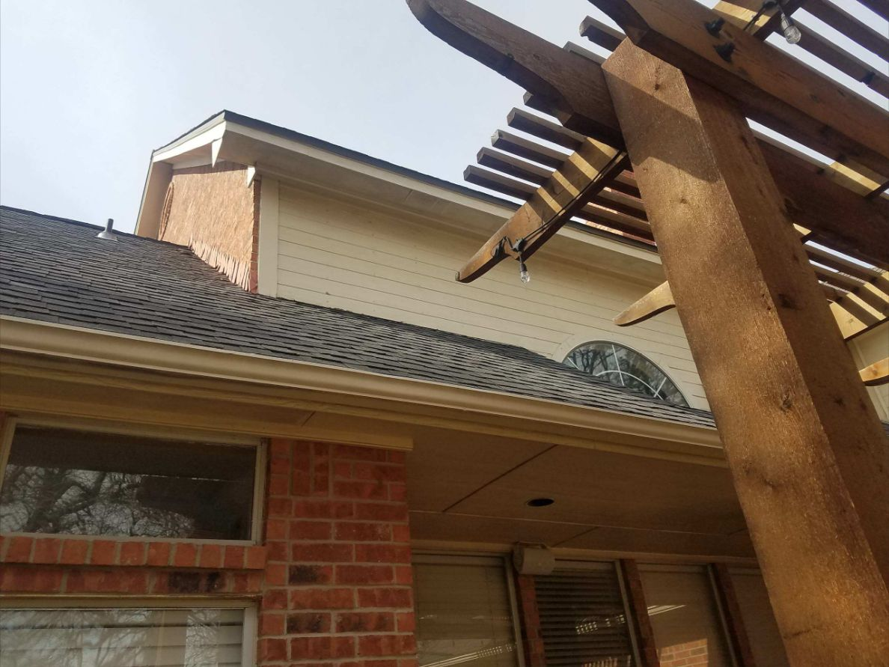
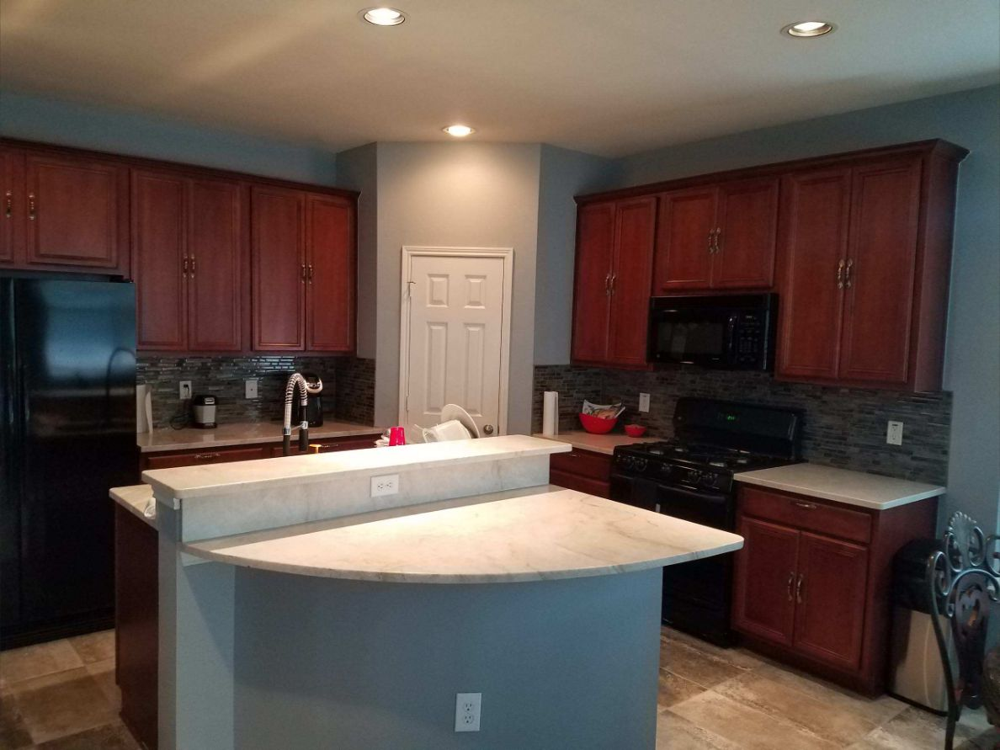

Bathroom Remodeling • Duncanville
Bathroom Vanity and Lighting Upgrade in Duncanville
Bathroom finish upgrade with an oversized mirror, multi-light vanity fixture, refreshed wall color and coordinated electrical finish work.
View project →Dallas–Fort Worth Portfolio
Real project case studies organized by city and service.
Photographed by Luna crews
Eight selected photographs from Luna General Contractors’ project archive. Every image below shows actual completed work—not stock photography.






Verified local details
Open a case study to see the documented challenge, completed scope, materials, date and project photographs.
Bathroom Remodeling • Duncanville
Bathroom finish upgrade with an oversized mirror, multi-light vanity fixture, refreshed wall color and coordinated electrical finish work.
View project →Bathroom Remodeling • Cedar Hill
Tub and shower renovation featuring large-format wall tile, a recessed niche, updated lighting and a refreshed enclosure area.
View project →Kitchen Remodeling • Arlington
Kitchen backsplash update featuring a gray glass mosaic installed between the countertops and upper cabinets for a modern reflective finish.
View project →Kitchen Remodeling • Mansfield
Kitchen backsplash installation using gray subway tile with clean alignment around white cabinets, countertops and a decorative range hood.
View project →Ver en español →Bathroom Remodeling • Midlothian
Complete master bathroom transformation featuring a custom walk-in shower, frameless glass, dual vanities, decorative tile, updated lighting and refined trim details.
View project →Kitchen Remodeling • Midlothian
Kitchen backsplash installation combining gray subway tile with metallic accent bands for a more customized focal wall.
View project →Kitchen Remodeling • Grand Prairie
Decorative kitchen backsplash installation using a black and white patterned tile to create a strong visual focal point.
View project →Kitchen Remodeling • Waxahachie
Kitchen update featuring a white hexagon backsplash installed around the range and microwave with clean cuts and a bright neutral finish.
View project →Planning a project?
Call Luna General Contractors or send project details for a free estimate across Dallas–Fort Worth.